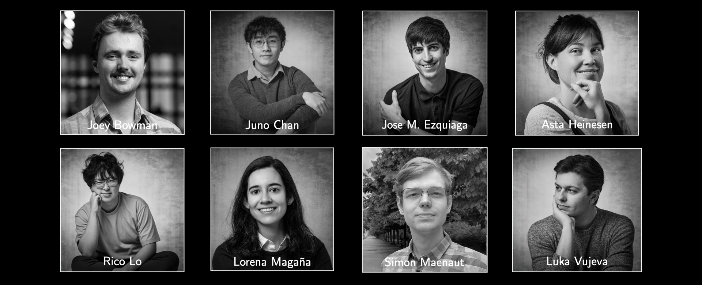
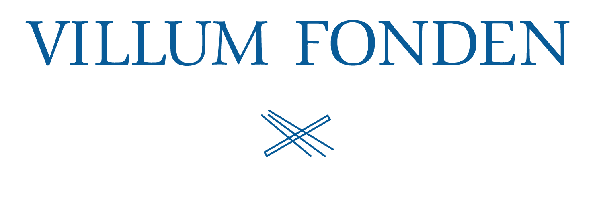

Gravitational Wave Explorers Group
Our Universe is still, mostly, a mystery, with 95% of its content made of unknown dark energy and dark matter. The Gravitational Wave Explorers group exploits the recently discovered gravitational waves – ripples in space and time produced by extreme gravitational systems like colliding black holes - to open unique opportunities to measure the Universe’s expansion in uncharted regions, map the unseen dark matter and test Einstein's gravity.
We are members of the LIGO Scientific Collaboration and the LISA Consortium.
The team is funded by the VILLUM Young Investigator Grant no. 53101 (VILLUM Fonden).
The GWexplorers team is proud to use and fund the Tycho supercomputer.
Group members
- Jose Maria Ezquiaga, Associate Professor
- Ka Lok (Rico) Lo, Postdoctoral fellow
- Lorena Magaña, Postdoctoral fellow
- Chun Lung (Juno) Chan, PhD student
- Luka Vujeva, PhD student
- Matilde García, Master student
- Ludvig Witschel, Bachelor student
- Asta Heinesen, Postdoctoral fellow
Visiting fellows
- Helena Ubach, PhD student, U. Barcelona, May-June 2025
- Eungwang Seo, PhD student, Glasgow, Sept.-Dec 2024
- Amanda Farah, PhD student, UChicago, May-June 2024
- Aditya Vijaykumar, Postdoc, CITA, April 2024
- Anson Chen, PhD student, Queen Mary University of London, May-June 2023
- David Figueruelo, PhD student, Universidad de Salamanca, February-March 2023
- Mesut Çaliskan, PhD student, Johns Hopkins University, January 2023
Short-term visitors
- Francesca Scarcella, Postdoc, IFCA Santander, June 2025
- Pierre Fleury, Researcher, CNRS Montpellier, June 2025
- Srashti Goyal, Postdoc, AEI, October 2024
- Anupreeta More, Research Faculty, IUCAA, March 2024
- Paolo Cremonese, Postdoc, U. Iles Balears, December 2023
- Anson Chen, PhD student, QMUL, December 2023
- Tjonnie Li, Prof., KU Leuven, November 2023
- Silvia Gasparotto, PhD student, UAB, August 2023
- Macarena Lagos, Research Scientist, Columbia, June 2023
- Miguel Zumalacarregui, Group Leader, AEI, June 2023
Past members
